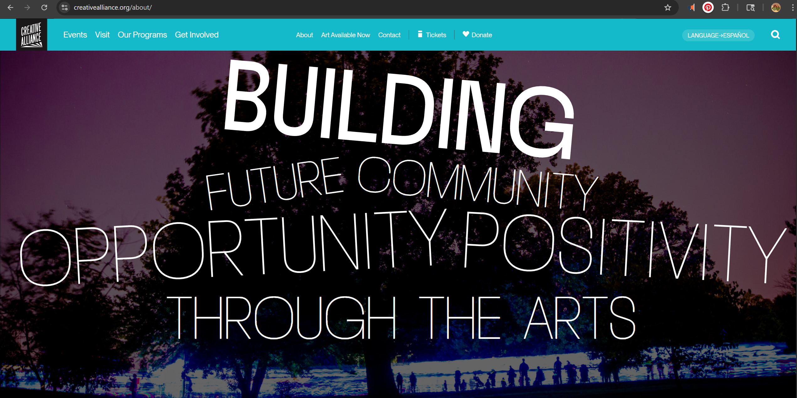

For this lab, I chose to evaluate the Creative Alliance, a well-known arts non-profit based in Baltimore. You can find their site at https://creativealliance.org/.
Audience: The site mainly targets local Baltimore artists, people looking for community events, and donors who want to support the arts. It has a very community focused feel.
After running the homepage through the Accessibility Checker, the site received an Audit Score of 59%. This means it is currently "Not Compliant" with standard accessibility laws.

The site is built using a hierarchical organization. When you look at the top navigation, you see clear buckets like 'Events' and 'Programs.' It’s pretty easy to find your way around if you're looking for something specific, but the menu is quite "heavy" with a lot of sub-options that can feel a bit overwhelming at first glance.
Effectiveness: Visually, the site is great, but for actual usability, there are some roadblocks. Because there are 18 links that don't have "discernible text," someone using a screen reader might get stuck not knowing where a button leads. It's effective for visual users, but not for everyone.
Engagement: This is where the site shines. The use of bright colors and large, energetic photos perfectly matches the "artsy" vibe of a Baltimore community center. It feels alive and welcoming, which fits their brand perfectly.
After reviewing the site and the Accessibility Audit, I have two main suggestions for improvement.
First, the 'LANGUAGE→ESPAÑOL' link in the header is white text on a very light teal background. It’s almost impossible to read for someone with low vision. I would change that text to a much darker color so the language options actually stand out.
Second, I think the search function needs to be more obvious. Right now, it's just a small magnifying glass icon that you have to click to open. I recommend replacing that icon with a permanent search box that stays open on the page. Having an actual box with a clear 'Search' label would make it much more obvious to users that they can type there, rather than making them hunt for a small icon. This would also make it easier to fix the contrast issues flagged in the audit by using darker text for the search label.